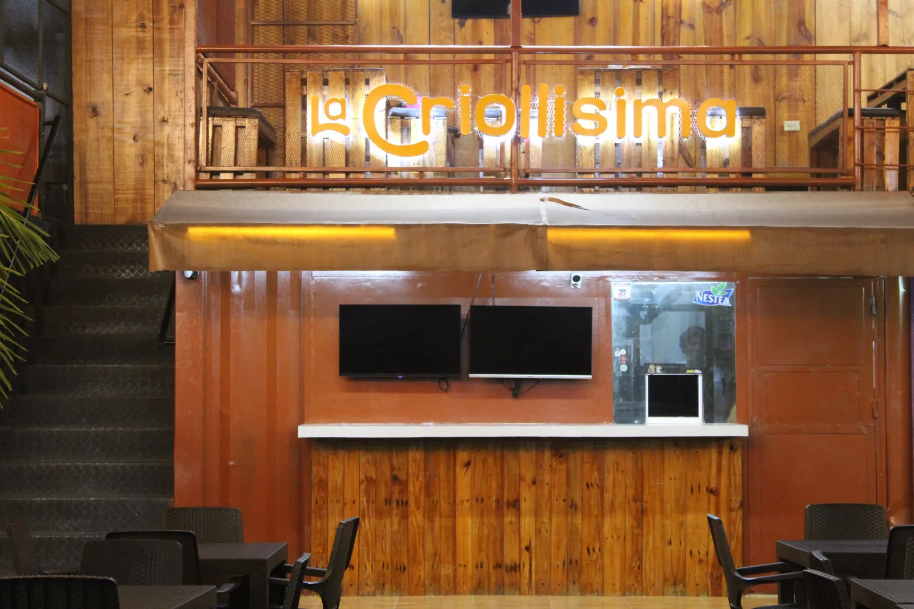

Conócenos
Un sueño familiar con sabor a casa
Desde 2010 compartimos mucho más que comida: tradición, alegría y ese cariño que solo tienen los negocios hechos en familia.
- 2010el año en que abrimos nuestras puertas
- 3ediciones seguidas ganando el As de la Arepa
- 2líneas de sabor: #AuténticoSabor y #SaborCalle
- 7días a la semana, de 6 pm a 12 am
Nuestra historia
Desde 2010 con sabor criollo
Lo que comenzó como un sueño familiar se convirtió en un lugar donde el sabor de nuestra cocina es el protagonista. Desde 2010 hemos compartido con nuestros clientes tradición, alegría, dedicación y mucho cariño.
Cada arepa, cada preparación y cada detalle llevan nuestra esencia, porque los mejores momentos se disfrutan alrededor de una buena mesa. Son más de quince años de trabajo, esfuerzo e historias compartidas, creciendo junto a ustedes y manteniendo vivo el sabor de nuestras raíces.

zona de trailers
As de la Arepa · As Gastronómico + Harina P.A.N.
Tricampeones de la arepa en Maracaibo
Desde nuestro debut en el festival «As de la Arepa», el público ha premiado nuestras creaciones de autor y la generosidad de la cocina marabina. Ganamos tres ediciones consecutivas, y eso nos pone entre las mejores areperas de la ciudad.

También vamos a tu evento
Nuestro food truck
Llevamos el sabor de La Criollísima a cumpleaños, bodas, eventos de empresa y fiestas.